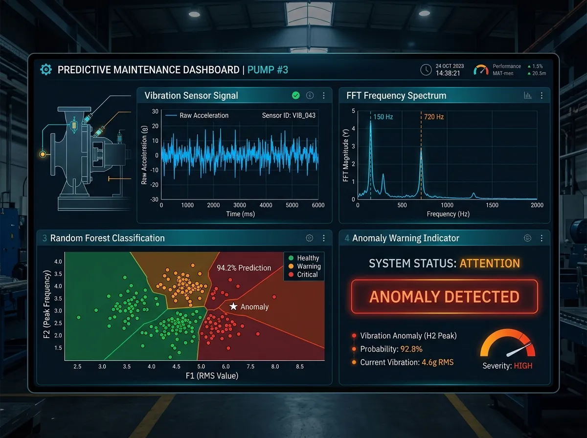

Machine Learning Industrial Fault Detection
Vibration Signal Processing, FFT and Wavelet Feature Extraction, and Predictive Maintenance Classifiers
Project Overview
In manufacturing and mechanical systems, early detection of bearing faults, gearbox damage, and motor wear prevents costly downtime. This project implements a condition monitoring pipeline that analyzes accelerometer vibrations using time-frequency feature engineering and machine learning classifiers.
The Challenge
Raw accelerometer data collected in active factories contains heavy harmonic background noise, changing loads, and non-stationary frequencies that obscure early micro-crack signatures.
The Engineering Solution
I engineered an end-to-end predictive maintenance pipeline:
- Multi-Domain Feature Extraction: Computed time-domain statistical moments (kurtosis, skewness, crest factor) alongside Fast Fourier Transform (FFT) spectral energy peaks and Continuous Wavelet Transform (CWT) scalograms.
- Machine Learning Classifiers: Trained and benchmarked Random Forest, Support Vector Machines (SVM), and Gradient Boosting models, accurately identifying inner race, outer race, and ball bearing fault severities.
- Edge Threshold Monitoring: Embedded decision rules capable of running on lightweight industrial controllers and edge gateways.
Vibration Analysis and Classification Dashboard

Diagnostic Accuracy and Results
The multi-domain feature pipeline achieved high diagnostic precision on standardized benchmarks: